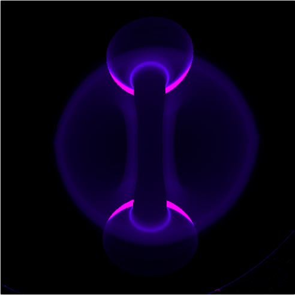
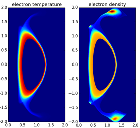
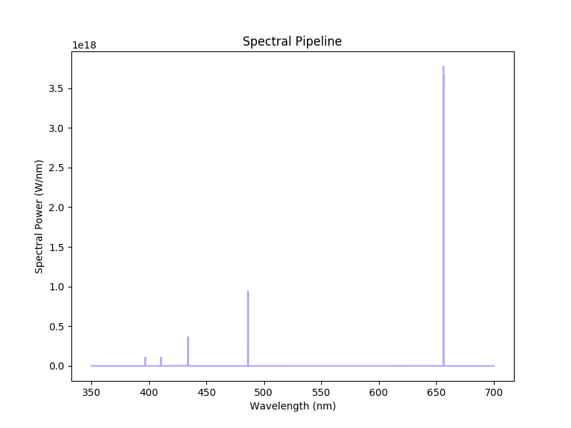

| CXRS Quickstart |
Commented demo file about how to use CHERAB for JET CX simulations. |

|
| #76666 sample analysis |
Demo CX analysis for pulse 76666 at t=61s |
|
| MAST-U filtered cameras |
Example of using SOLPS simulation and ADAS rates to model filtered cameras. |

|
| MAST-U SOLPS plasma |
Example of loading a plasma from a SOLPS simulation and inspecting the various
plasma species parameters. |

|
| Custom Emission Model |
Example of making a custom emitter class in CHERAB. D-alpha impact excitation
is used for the example. |
|
| Measuring line of sight spectra |
Basic balmer series measurement in the MAST-U divertor with an optical fibre.
Localisation of the plasma emission is examined by plotting profiles of parameters
such as density and temperature along the ray trajectory. |

|
| Surface radiation loads |
Demo of loading a plasma from SOLPS and using its radiation data to calculate
total radiation arriving at surfaces. |

|

{kind=link}
{kind=link}
{kind=link}
{kind=link}
{kind=link}
{kind=link}
{kind=link}